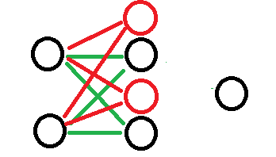

1. 什么是整流线性单元 ReLU
[success]
Rectified Linear Unit, ReLU
整流线性单元使用激活函数。
整流线性单元易于优化，因为它们和线性单元非常类似。
[warning] [?]线性单元易于计算我还可以理解，易于优化是什么意思呢？
[success] ReLU的优点
书上列举了两个优点：易于优化、梯度方向更加有用
其它资料上列举了ReLU的其它优点：
（1）计算快。
（2）相当于infinite sigmoid with different bias
（3）解决梯度消失问题。
线性单元和整流线性单元的唯一区别在于整流线性单元在其一半的定义域上输出为零。 这使得只要整流线性单元处于激活状态，它的导数都能保持较大。 它的梯度不仅大而且一致。 整流操作的二阶导数几乎处处为0，并且在整流线性单元处于激活状态时，它的一阶导数处处为1。 这意味着相比于引入二阶效应的激活函数来说，它的梯度方向对于学习来说更加有用。
[success] 问：我可以理解为ReLU的二阶导数没有用，那么它的“梯度方向更加有用”是什么意思？
答：我的理解是，因此没有二阶效应的影响，一阶导数的指导会更加准确。其中一个表现就“梯度消失问题”。
从直觉上讲，代表w的变化对代价函数的变化的影响程度。即
每一层的都要经过后面的很多层才会影响到最终的。
由于有二阶效应的激活函数，每经过一层，其影响力要么会减弱一点，要么会变强一点。到了最后对的影响不是梯度消失就是梯度爆炸。
但ReLU激活函数的一阶导数处处为1，那么过ReLU时的影响力即不会变强也不会减弱，因此不存在梯度消失就是梯度爆炸。
整流线性单元通常作用于仿射变换之上：
[success] 问：ReLU与线性网络的关系
答：当unit输出小于0时，它对网络是没有影响。
把这些没有影响的网络去掉。相当于得到了一个thinner的线性网络。
问：使用DL的目的就是要得到一个非线性网络。ReLU会使网络退化为线性网络，这样不会有问题吗？
答：当输入在一定范围内时，网络是线性的。
但当输入超出这个范围时，网络的结构就变化了。变成了另一个thinner的线性网络。
因此总体上说，它不是一个线性网络。
2. 初始化
当初始化仿射变换的参数时，可以将的所有元素设置成一个小的正值，例如0.1。 这使得整流线性单元很可能初始时就对训练集中的大多数输入呈现激活状态，并且允许导数通过。
3. 扩展
有很多整流线性单元的扩展存在。 大多数这些扩展的表现比得上整流线性单元，并且偶尔表现得更好。
整流线性单元的一个缺陷是它们不能通过基于梯度的方法学习那些使它们激活为零的样本。 整流线性单元的各种扩展保证了它们能在各个位置都接收到梯度。
[success]
ReLU的缺点是，当z<0时ReLU无法学习。
改进：当z<0时，h = a * z
（1）a = -1，用于“寻找在输入照明极性反转下不变的特征”
（2）a = 0.01
（3）a是可学习的参数
整流线性单元的三个扩展基于当时使用一个非零的斜率：。 绝对值整流（absolute value rectification）固定来得到。 它用于图像中的对象识别，其中寻找在输入照明极性反转下不变的特征是有意义的。 整流线性单元的其他扩展比这应用地更广泛。 渗漏整流线性单元（Leaky ReLU）将固定成一个类似0.01的小值，参数化整流线性单元（parametric ReLU）或者PReLU将作为学习的参数。
4. Maxout Unit
maxout单元进一步扩展了整流线性单元。 maxout单元将z划分为每组具有k个值的组，而不是使用作用于每个元素的函数。 每个maxout单元则输出每组中的最大元素： 这里是组i的输入索引集。 这提供了一种方法来学习对输入x空间中多个方向响应的分段线性函数。
[success] 对于Maxout Unit的概念，我是这么理解的。
假如网络原来是这样的。
现在要对中间那一层引入Maxout激活函数，那么把中间层的每个Unit又生出（k-1）个兄弟出来。例如k=2，就成了这样的：

每个Unit和它的兄弟形成一个group，原来有n个Unit，那么现在就有n组共nk个Unit。
这些新的Unit和老的Unit一起加入到网络，且对它们一视同仁。即所有的Unit都有各自的W和b，且都与上一层全连接。
这样就得到了n组共nk和z。
这时候就发挥group的作用了，每个group有k个z，但是只使用1个z。
第i个group中最大z就做为第i个h输出到下一层中。
下面这张图是网上资料的截图，表达的很清楚。
maxout单元可以学习具有多达k段的分段线性的凸函数。
[success]
问：maxout怎么做出ReLU的效果？
答：
假设ReLU训练出来的参数为w和b，得到的是左边这样的效果。
问：为什么maxout单元可以视为学习激活函数？
使用maxout神经元，令第一组的参数也为w和b，第二组的参数为0,0，也能得到同样的效果。
但如果第二组使用了w'和b'，得到的可能是这样的效果：
然后将得到的两个直线取最大，最终学到的激活函数为绿色的那根线。
因此说maxout是一个learnable activation function。
问：为什么说maxout单元表达出来的是“具有k段的分段线性的凸函数”？
答：根据上图可知，每一组参数可以得到一根直线，k组参数就是k根直线。将所有直线合并取最大的部分，得到的就是一个分段线性的凸函数。
凸函数有多少段跟k有关。 问：maxout是分段函数，不是处处可微，怎么训练？**
答：它的偏微分不是0就是w。
maxout单元因此可以视为学习激活函数本身而不仅仅是单元之间的关系。
使用足够大的k，maxout单元可以以任意的精确度来近似任何凸函数。
[success]
这句话可以理解为任意的凸函数都可以由分段线性函数以任意精度拟合”。
特别地，具有两块的maxout层可以学习实现和传统层相同的输入x的函数，这些传统层可以使用整流线性激活函数、绝对值整流、渗漏整流线性单元、或参数化整流线性单元，或者可以学习实现与这些都不同的函数。
[warning] 怎么证明？
上面列举的这些整流变种其它都是凸函数。根据上面的理论，一层maxout就已经可以逼近任意凸函数了。现在逼近这些整流函数为什么需要2层maxout？
maxout层的参数化当然也将与这些层不同，所以即使是maxout学习去实现和其他种类的层相同的x的函数这种情况下，学习的机理也是不一样的。
[success] maxtout的线段是自己学出来的，其它整流的线段是人工设计出来的。
每个maxout单元现在由k个权重向量来参数化，而不仅仅是一个，所以maxout单元通常比整流线性单元需要更多的正则化。 如果训练集很大并且每个单元的块数保持很低的话，它们可以在没有正则化的情况下工作得不错。
maxout单元还有一些其他的优点。 在某些情况下，要求更少的参数可以获得一些统计和计算上的优点。 具体来说，如果由n个不同的线性过滤器描述的特征可以在不损失信息的情况下，用每一组k个特征的最大值来概括的话，那么下一层可以获得k倍更少的权重数。
[warning] 这段话说的啥？我是这么理解的，不知道对不对。
普通ReLU只能分两段，maxout可能分很多段。
如果想要描述某个特征，可以用n个普通的ReLU的话，也可以用一个参数为k的maxout，都能达到同样的效果。
但用后者需要的参数比前者更少。
因为每个单元由多个过滤器驱动，maxout单元具有一些冗余来帮助它们抵抗一种被称为灾难遗忘（catastrophic forgetting）的现象，这个现象是说神经网络忘记了如何执行它们过去训练的任务。
[warning] [?] 什么是灾难遗忘？跟maxout有什么关系？
5. 分段线性函数的特点
整流线性单元和它们的这些扩展都是基于一个原则，那就是如果它们的行为更接近线性，那么模型更容易优化。
[success]
以线性分段的方式逼近非线性，既有模拟出非线性函数，又具有线性函数的优点。
使用线性行为更容易优化的一般性原则同样也适用于除深度线性网络以外的情景。 循环网络可以从序列中学习并产生状态和输出的序列。
[warning] 循环网络、序列、状态序列、输出序列。
当训练它们时，需要通过一些时间步来传播信息，当其中包含一些线性计算（具有大小接近1的某些方向导数）时，这会更容易。
[warning] 时间步、线性计算
作为性能最好的循环网络结构之一，LSTM通过求和在时间上传播信息，这是一种特别直观的线性激活。 它将在第10.10节中进一步讨论。
[warning] LSTM